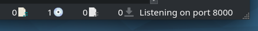
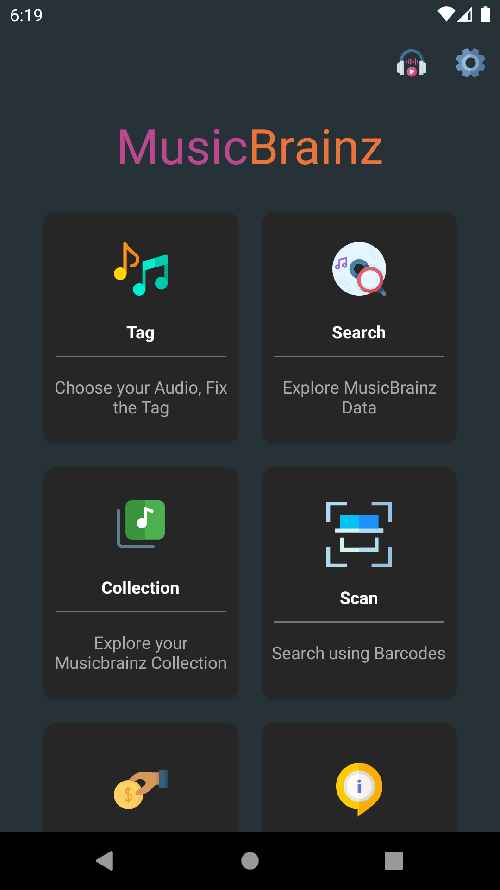
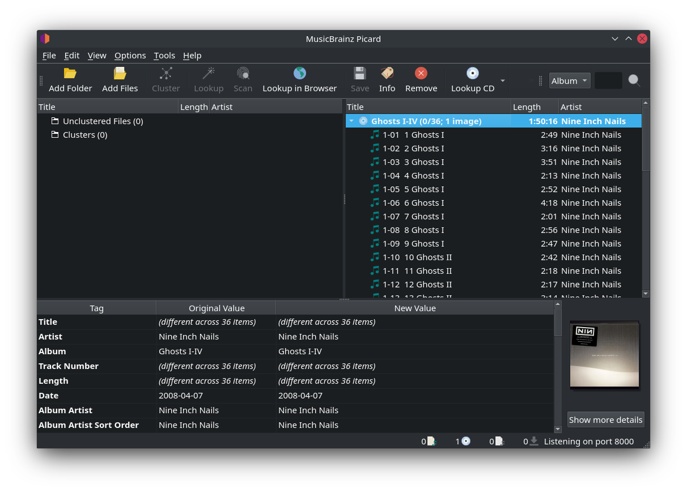
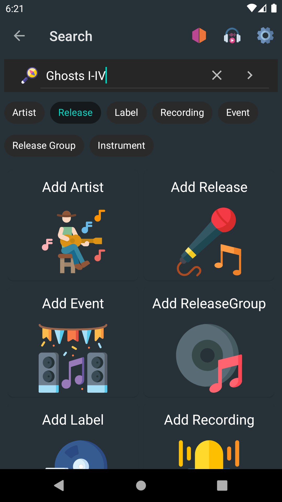
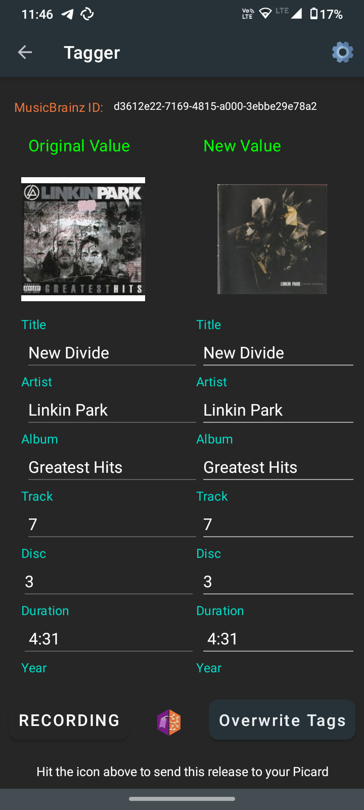

Loading releases with MusicBrainz for Android
If you have an Android phone you can use the MusicBrainz for Android app to search for releases by text search or by barcode and load them into Picard running on your computer.
This is useful for example if you have previously ripped your CDs and now you want to tag your ripped files with Picard using exactly the data for your the releases you own. You can then use your phone to scan the barcodes of your CDs and have their data loaded into Picard, then use this data to tag your local files.
For this to work you need both your phone and computer to be connected to the same network.
Configuring Picard
In enable “Browser Integration” and disable “Listen only on localhost”. It is recommended that you keep the listening port on the default value 8000, but you can change that as well.
Once you have saved the options, check whether Picard is showing a message “Listening on port 8000” in the status bar on the lower right of the main window.
The actual port number can vary, but the default is 8000. Note the port number, you will need it to configure the Android app in the next step.
See also
Installing and configuring the MusicBrainz Android app
Install MusicBrainz for Android on your phone. You can download the latest version of the app either from the Google Play Store or F-Droid.
Once installed, launch the app and tap on the settings icon on the upper right. Scroll down to the Picard settings. For the IP Address enter the IP address of your computer on which Picard is running. Depending on your local network setup you might also be able to enter the hostname of your computer instead of the IP address.

For the Port enter Picard’s listening port as displayed in Picard’s main screen (see the previous section). The default is 8000.
Before you continue make sure Picard is running and the “Listening on port…” status message is shown. Also make sure your phone is connected to your local network.
Loading releases by barcode
You can use your phone as a barcode scanner to load the metadata for your physical media:
On the main screen of the Android app tap on “Scan”.
Scan the barcode of a CD, LP or other music media.

If a release with the scanned barcode is found on MusicBrainz the app will load and show the release details.

Tap on “Send to Picard”. If everything was configured correctly the release will be loaded into Picard running on your computer.

{kind=link}
You can now continue tagging your local files by matching them to the loaded tracks as described in Matching Files to Tracks.
Note
If you only want to use the barcode scanner functionality to find and load releases for your physical CDs, LPs or other music media, you can also use the Picard Barcode Scanner app. The functionality and setup is similar to what is described above, but the app is focused on the barcode scanning and sending the results to Picard.
Loading releases by search
Instead of searching by barcode you can also do a text search on your phone:
On the main screen of the Android app tap on “Search”.
On the search page select “Release” and enter a search term, e.g. an album title or artist name.
The search results will show a list of matching releases. Tap on one to show the release details.
Tap on “Send to Picard”. If everything was configured correctly the release will be loaded into Picard running on your computer.
{kind=link}
Loading releases from the Tagger
Instead of finding a release by barcode or a search to send to Picard, you can also send a release from a tagged audio file currently stored on your device:
On the main screen of the Android app tap on “Tagger”.
On the tagger, select your release and tap the MusicBrainz icon near the bottom of the screen.
If everything was configured correctly, the release will be loaded into Picard running on your computer.
{kind=link}